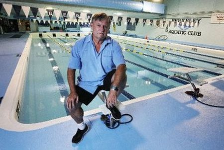

Josh Huang's weblog on building topics of inspiration.
| Apeta | About | Home | Full Reads | CS50 | Inspiration Wall | Contact |
17 September 2021: Finished my first 70.3!!
28 August 2021: Went out on a 50 mile bike ride today. At about mile 25 and at the furthest point away from the starting point possible, I got a flat tire. Hadn't brought a repair kit. Oh man. How foolish of me. That was trouble because it's difficult to walk in bike shoes, and I was 30 miles away from my car. I tried riding on the flat but that felt dangerous because I was alongside a busy road with cars whooshing by.
Two riders, Sean and Greg from Raise the Bar triathlon club, saw me walking my bike along and stopped by to help. They could have easily kept riding past me. Instead they took time out of their ride to help me. They had a spare tire and offered a tube. Then they realized I didn't have the other equipment needed and replaced my flat for me entirely. I felt embarrassed and thankful. So embarrassed that I forgot to get their numbers to thank them or return the favor. Sean and Greg, this post is for you. It takes a special person to offer help selflessly. I'm not sure I would have done the same thing, but after today, I will. Special thanks to you, Sean, for spotting me first.
14 August 2021: Made it to averaging 300 watts of power!!

11 April 2021: I kept waiting for a day I felt fresh to test, but I realized that probably won't come. Feeling stronger.

28 March 2021: I skiied Alpental at least 10 times this season. For a guy who was happy to ski one or two times a year on the east coast, this is heaven. The mountain vistas on I-90 on the way to Snoqualmie Pass are unbelievably beautiful. It is no small gift to see them. It's good for the soul.

10 March 2021: Proud of mounting our new OLED. Thank you, Lucy, for helping me! The challenge is lining up the pilot holes so they align with the studs and TV mount. I had to make many pencil marks before I was sure it would be level before drilling. We used to watch our movies on our Macbooks. What a difference to watch on a big screen!

27 Feb 2021: If you love nature shows, then check out My Octopus Teacher. It's a nature show with serious heart. It will make you want to get out there, go experience something wild. Beautifully shot at a remote location off the shore of South Africa. Great for kids too.
20 January 2021: Biden Inauguration Committee did a fantastic job with this special. It's a joy to see so many talented people together in "one place". Also a welcome respite amid all the noise we have today.
24 December 2020: If you are waiting for your life to get started, there is no time like now. This holiday break, I gave to my loved ones like my Mom, Lucy, Mayson and close friends. Dad doesn't want gifts, but he liked the Starbucks Kenya Reserve coffee. Greg didn't want a present period. I made time for the activities that I love like downhill skiing, alpine touring, general strength training -- stretched my limits. Learned to sew the buttons back onto my duvet cover, fixed the curtains in Mayson's room, got handy with a power drill. I'm more intentional about the professional projects I work on, and I am thankful for those who helped me.
Projects now are putting up shelving in the garage, put up a pegboard for commonly used tools. Work with engineers on a social networking concept. Be present in meetings and give active feedback.
18 November 2020: I didn't understand Peanuts cartoons growing up. Who talks like this as a kid? But now I think they're great. If only I talked that way as a child.
"Linus and Lucy" is timeless and it will get you into the holiday mood.
10 November 2020: I pulled my back on October 26 and then reinjured it that same week. :( It was very painful. I've since recovered, but I have a deeper appreciation for small things like getting out of bed without any trouble. I am having the best time waking up for morning runs outside, rain or shine. We live in the mountains where there are views like this to take in this time of year. There's something about the rhythm of running that is centering, and I like taking in the day outside first thing.
07 November 2020: This is a beautifully shot movie. The score by Hans Zimmer is brooding and hypnotic. I like how Christopher Nolan's films all have weight. He has many gems - "The Prestige" and "The Dark Knight" are stand outs. What I love about "Inception" is it was an entirely original concept (no pre-branding like Marvel) given a whopping $160MM budget because of the faith the studio had in Nolan. And it came out beautifully! All of Nolan's films are shot on film, not digital video, with long-time collaborators like cinematographer, Wally Pfister, creating a singular feel and patina.
I aggregated the best answers to the mysteries posed in the movie into this post. Read on only if you've seen the movie.
22 October 2020: Still the best Bond.
31 October 2020 update: So sad to hear Sean Connery has passed away. End of an era really.
15 October 2020: Had a great time doing a brisk up and down morning run on Jim Whittaker Wilderness Peak Trail on Cougar Mountain. Ran with a buddy, Brent K. Saw the fog blanketing the hills on the drive over and first light peaking over the horizon.
06 October 2020: On our way home from Lummi Island, we decided to grab lunch at Taylor Shellfish in Samish. We drove Chuckanut Route 11 to get there and it's breathtaking. It's a winding passage that hugs cliffs with stunning views of Skagit and Bellingham Bay. This route is part of the original Pacific Highway in Washington.
17 September 2020: We have been working for this moment for two years. Announcing the opening of Store 1, Amazon Fresh Stores Woodland Hills, LA! Many thanks for the teams across Engineering, Real Estate, Store Design, Operations, Category, Private Brands, Marketing, and many other partner teams that came together to make this moment possible. It's incredibly awarding to see Store 1 up and running.
We had so many *big* launches that I created a *little* video to celebrate. I shared this with my org. Hope you enjoy it!!!
21 August 2020: I am a big fan of Scott Simon and Weekend Edition. It's a joy to enjoy a Saturday morning listening to the breadth of topics. I recommend it as a way to start the weekend informed.
All of the episodes are available on-demand at NPR Weekend Edition.

12 August 2020: Completed 100K feet of elevation gain today!!! Thanks to Bennett M. for introducing this and completing it with me. Always easier with a buddy. Finishers receive a belt buckle. :)

31 July 2020: I really enjoyed Shoe Dog. It is both inspirational and hilarious. Several sections made me laugh out loud. Loved the part when Buck (Phil Knight) wins over a girl from an obnoxiously preppy boy during one of his travels. I've seen an obnoxiously preppy boy or two at Princeton, so it was too funny.
26 July 2020: At one time, Skype was dominant. Microsoft acquired Skype for $8.5 billion in 2011. Now, Zoom is the new Skype and we're relying on video conferencing more than ever. Was just curious what happened?
Looking into it, Microsoft merged Skype with Lync, its in-house enterprise internet phone service, in order to be packaged under Office. While Microsoft allocated resources to integrating Skype with the rest of its back-end systems, competing services like Zoom, What's App, FaceTime, and Houseparty launched and gained market share. In addition, Skype became more difficult to use after it merged under Office.
The LA Times' Don't Skype Me summarizes the issues.

20 July 2020: Saw Hamilton for the first time a few days ago. I absolutely loved it. I love that it's about getting what you want, making use of the limited time given to us. It's Lin-Manuel's genius to realize Hamilton was the original badass immigrant. Started from nothing and rose up to change history on the biggest scale. The musical comes full circle for me. My AP US History teacher, Dr. Conlon, whom I am the biggest fan of and who herself is the biggest fan of Alexander Hamilton taught us early on he's the one that kept US credit from becoming worthless by forcing the US to honor it's debts. It's wonderful that everyone else is celebrating this now as well.
Rise up, When you're living on your knees, You Rise up.
The story made me think of my family's personal history. I can never give my parents enough credit for living the American dream. My Dad grew up with little but used his mind to test into academic programs for free of charge. One thing I love about him is his supreme confidence in his intellect. And why not? He pulled himselt out of nothing to earn a PhD from UC Berkeley in Electrical Engineering when that program was at its zenith of power. He told me stories how he lived on a few dollars a day. Rose up early to work part-time jobs like baking bread for a local store at 4:30AM. His treat every once in a while was a hot dog from Top Dog. These are the stories that live with me.
Eventually he used that PhD to cofound his company, Anadigics, in 1985. The Company went public about 10 years later.

09 July 2020: John Mayer is one of the best guitar players who's ever lived. He adds his trademark voice and well-crafted songwriting, and that trio is magic. His album "Live in LA: Where the Light is" is amazing. He gets on stage solo in front of thousands and blows everyone away. The quality of playing is just off the charts. The tone on his guitar is just amazing, and last few songs are jaw-dropping. Listening to "Slow Dancing in a Burning Room" always makes me pause.

04 July 2020: When I first started to race triathlons, I was put off by how spending $ could get you a better time. I grew up swimming competitively. There is nothing you can buy that makes you swim faster. Only hard work in the pool. It's the same for running. I guess that's why both of those sports speak to me.
As you get up the training curve, you realize the right equipment makes a difference. Nothing will ever replace the engine (that's you) and training hard and smart. But a beautiful bike will make your rides that much more fun. The Cervelo P5 is like riding a rocket ship.
I'm thankful for the small group of workout buddies I share training notes with. This post goes to Adam G. and Dorje G.
02 July 2020: Waiting for Stranger Things Season 4. This show is great. It's a throwback to the 80's/90's with a terrific cast. The nostalgia is important, but I actually think this show is successful because friendship serves as its emotional core. This show makes me realize the luxury of running around with friends during long summer days as a kid.
Sources say July 2021 most likely.

30 June 2020: Amazon closed on the acquisition of two sites today out of Fairway Market's banktuptcy. I am enormously proud of this transaction.

27 June 2020: Washington state has some of the most beautiful lakes on this planet. The best part is they are largely untouched gems. World-class locations you visit by parking along side the road. The water is clear and brisk. You can see small fish swimming around as you wade in. This is a picture of Lake Kachess.
The Days are Just Packed. - Bill Watterson.
I spent the summers of my youth playing with my friends at the local Racquets Club in leafy Short Hills, NJ. There, I joined my first swim team, made my first friends, and learned to do a back dive. I'm happy Mayson can enjoy his summers too, when the days are long and packed.

20 June 2020: Springsteen is one of those legendary figures. Half god half man. One of those in that stratosphere few attain. I was drawn to his autobiography because I wanted to learn more about the legend. Springsteen's voice is humble and meditative. As a Jersey boy, it's heartening to read about one of New Jersey's true legends.
This book matters to me because when I left Kindle in 2018 I asked my friends at Simon & Schuster to sign my copy of the book. I had some of my most educational and fun negotiations with the team at S&S. They are sharp, professional, and a real pleasure. It is signed Colin S., Doug S., and Chrissy F.

08 June 2020: I could write forever about my mom. She is the one who taught me how to ride a bike, pushed me to go off a high dive for the first time, and she is the glue that holds our family together. When my brother and I grew up, my mom raised us day in and day out by herself. My dad was busy at work and is naturally hands off day to day. She cooked for us three meals a day and did the dishes for every meal, washed our laundry, and did all the shopping on her own. Not once did she ask us to help with the chores. Incredible.

15 May 2020: There are some things in life that just bring a smile to my face. To this day, the Tiny Toons Adventures musical episode is one of them. I watched hours of TV growing up. This is one of the very best. Instantly catchy and entirely original songs paired with fun themes like Arabian Nights. Two classics are They Might be Giant's "Istanbul (Constantinople) and my personal favorite, Montana Max's "Money it's What I Want." :)
21 April 2020: Ten months into joining a strategic initiative, I shared a list of tips for a better work day with my org. I find these lessons just as applicable now. I hope you find them as helpful as I do.
10 March 2020: John Steinbeck's "Breakfast" is required reading for most US students and it is one of my favorite passages. I defy anyone to read it and not want to eat some bacon with biscuits.

27 February 2020: There are people in my life who are irreplaceable. I call them the lights in my life. If you really want to know me then you have to understand what these individuals gave me. I swam for Jim Wood at the Berkeley Aquatic Club from age 10 to 18 and he is one of those figures. Sadly, Jim passed away in early 2019.
I was never the fastest swimmer, but Jim saw in me quiet leadership. I didn't appreciate his confidence in me then as much as I do now. I wish I could have told him that. This picture resolution isn't great but this is the Jim I know - sitting on the deck at this specific pool where we spent countless hours training.